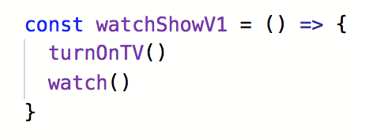
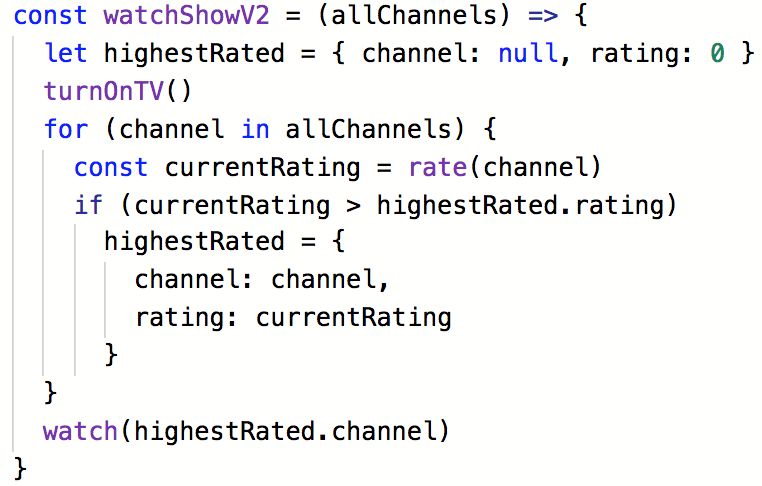
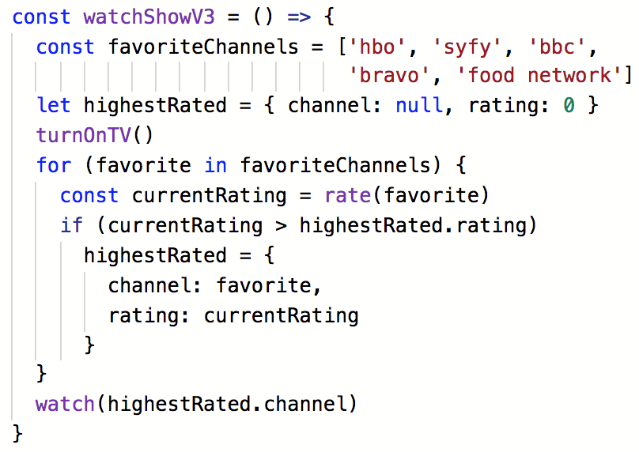
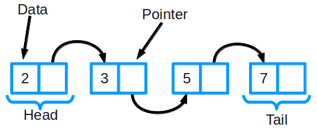
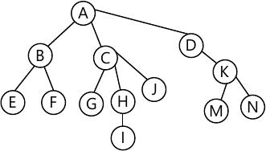
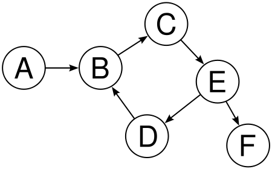
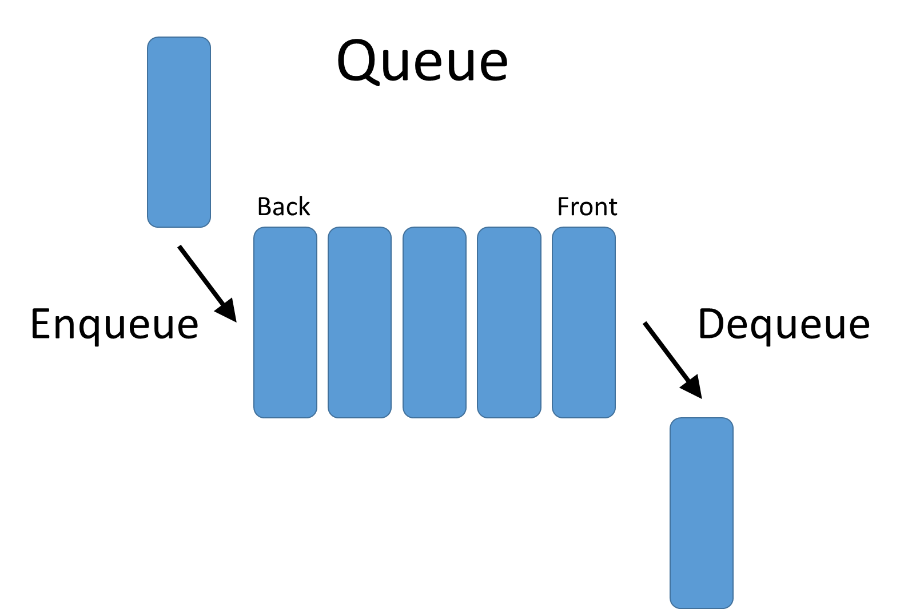
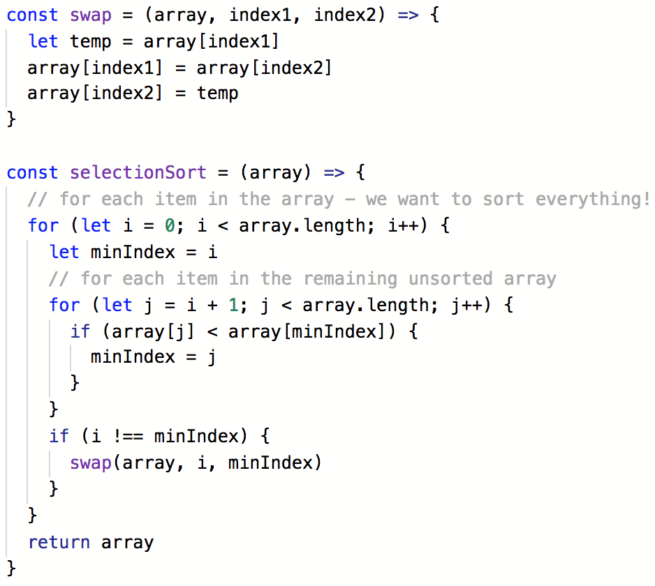

Intro to Algorithms
Schedule
10:00 - 1PM Introduction
Defining an algorithm
Data Structures
Goal of algorithms
Time/space complexity
1:00 - 2:00 Lunch
2:00 - 5:00 Searching - Linear & Binary
Sorting
Algorithms in Real Life
Conclusion
Table of Contents
What will we be covering in this class?
- What is an algorithm?
- Intro to algorithmic complexity
(how good is an algorithm) - Demonstrate sort and search algorithms
(the classics)
Expectations
- Participation and questions
- Keep coming up with more solutions
- Collaborate with positivity and energy
Not expecting:
- Syntax
- Knowing all the things
Algorithms
"A repeatable process for determining
the solution to a problem."
Algorithms in Daily Life
- Finding a fruit in the grocery store.
- Alphabetizing name tags.
- Re-organizing your kitchen to find things easier.
- Finding keys that you lost.
- Finding something good to watch on TV.
Picking something to watch on TV v1

Picking something to watch on TV v1
- Turn on TV
- Watch what is on
Picking something to watch on TV v2
Picking something to watch on TV v2
- Turn on TV
- Flip through every channel and rate what is on
- Find the highest rated channel
- Watch
Picking something to watch on TV v3
Picking something to watch on TV v3
- Turn on TV
- Check 5 favorite channels and rate what is on
- Find the highest rated channel
- Watch
Which version is best?
1. Turn on the TV
OR2. Rate all channels
OR3. Rate top channels
Goal of Algorithms
- Solve a problem
- in a repeatable way
Goal of Whiteboarding Interviews
- Show your thought process
- Solve the most obvious (to you!) solution first
- Talk about the tradeoffs and improve it
Exercise time!
What is an algorithm you use?
Write down steps for several versions of
an algorithm to solve an everyday problem
Ideas:
- Organizing email
- Swiping left or right on tinder
- Deciding what restaurant to eat at
- Sorting your laundry
Data Structures
(Just good to know; we won't be covering extensively!)
A way to store data
so that it can be used as desired
Data Structures + Algorithms
A good way to approach an algorithm is to
think about the data structures that you know.
What are their properties?
How can these be used to your advantage?
Example:
Arrays/List

Example:
Dictionaries/ Objects/ Hash Maps/ Maps

myObject = {
key : value,
key : value,
key : value
}
Example:
Abstract Data Structures
Linked List
Tree
Graph
Queue
Optimizations
Designing algorithms is about making decisions.
All decisions have tradeoffs.
You may want to optimize to complete the task:
- in the shortest time
- using the least amount of space
Complexity
How do you know if your algorithm is good?
How do you compare algorithms?
- Time Complexity: How long does the algorithm take?
- Space Complexity: How much space does it use?
The less complex the better!
Grocery Shopping
Time Efficient
- Drive large car to grocery store
- Buy everything you need
Saves time, but requires you to have a large car
Lower time complexity
Higher space complexity
Grocery Shopping
Space Efficient
- Walk to grocery store with tote bag
- Buy one item
- Walk home and drop off the item
- Repeat until done
Takes a long time, but doesn't require a car
Higher time complexity
Lower space complexity
Time Complexity
How long does an algorithm take?
Big O Notation
- Language we use to describe an algorithm's complexity
- Approximation of how quickly space or time complexity grows relative to input size
- Usually talking about worst case scenario
Put Away Laundry - v1
Algorithm
- Dump laundry on floor
Code
laundry.drop()
Laundry v1
Runtime
How long does the algorithm take?
Dumping out laundry takes 2 seconds.
| #items | #seconds |
|---|---|
| 4 | 2 |
| 8 | 2 |
| 16 | 2 |
N = items of clothing
Time it takes: (N*0 + 2)
Laundry v1
Big O Notation
O(N*0 + 2)
→ O(2)
→ O(1)
Constant time
Hang Up Laundry - v2
Algorithm
- Dump laundry on bed.
- Put each item of clothing into a pile for that type
("shirts", "underwear", "socks", etc). - Go through each pile and hang up each piece of clothing.
Laundry v2
Code
const piles = { 'shirts': [], 'socks': [], 'pants': [] }
laundry.drop()
for (item in laundry) {
piles[item.type].push(item)
}
for (pile in piles) {
for (item in pile) {
item.hang_up()
}
}
Laundry v2
Runtime
How long does the algorithm take?
Dumping out laundry takes 2 seconds.
Putting an item in a pile takes 10 seconds.
Hanging an item up takes 30 seconds.
| #items | #seconds |
|---|---|
| 4 | 2 + (4*10 + 4*30) = 160 |
| 8 | 2 + (8*10 + 8*30) = 320 |
| 16 | 2 + (16*10 + 16*30) = 640 |
N = items of clothing
Time it takes: 2 + (N*10 + N*30)
Laundry v2
Big O Notation
(2 + N*10 + N*30)
→ O(2 + 40N)
→ O(40N)
→ O(N)
Linear time
Match Clean Outfits - v3
Algorithm
- Dump laundry on bed.
- Sort the shirts and pants into two different piles.
- Make all possible outfit combinations. Let's assume there are an equal amount of pants and shirts.
Laundry v3
Code
pants_pile = ['jeans', 'overalls', 'leggings', ..., 'cutoffs'] // N items
shirts_pile = ['t-shirt', 'blouse', 'crop-top', ..., 'tank'] // N items
outfits = []
laundry.drop()
laundry.sort()
for (shirt in shirts_pile) {
for (pants in pants_pile) {
outfits.push([shirt, pants])
}
}
Laundry v3
Runtime
We must match each shirt with each pair of pants.
Dumping out laundry takes 2 seconds.
Putting an item in a pile takes 10 seconds.
Looking at each item takes 2 seconds.
| pants | shirts | calculation | seconds |
|---|---|---|---|
| 4 | 4 | 2 + (4*10) + (4*2)*4 | 74 |
| 8 | 8 | 2 + (8*10) + (8*2)*8 | 210 |
| 1024 | 1024 | 2 + (1024*10) + (1024*2)*1024 | 2107394 |
N = # items of clothing
Time it takes: 2 + (N*10) + (N*2)*N
Laundry v3
Big O Notation
(2 + N*10 + N*2*N)
→ O(2 + 10N + 2N2)
→ O(10N + 2N2)
→ O(2N2)
→ O(N2)
Quadratic time
Time Complexity
| Order of growth | Name | Description | Example |
|---|---|---|---|
| 1 | constant | statement | add two numbers |
| logN | logarithmic | divide in half | binary search |
| N | linear | loop | find the maximum |
| NlogN | linearithmic | divide + conquer | merge sort |
| N2 | quadratic | double loop | check all pairs |
| N3 | cubic | triple loop | check all triples |
| 2N | exponential | exhaustive search | check all subsets |
Question Time!
What is the time complexity of...
skipping to the front of a line
O(1) - Constant
O(n) - Linear
O(n2) - Quadratic
What is the time complexity of...
waiting in a line
O(1) - Constant
O(n) - Linear
O(n2) - Quadratic
What is the time complexity of...
skipping half of a line
O(1) - Constant
O(n) - Linear
O(n2) - Quadratic
What is the time complexity of...
looking up an element in an array
var things = ["raindrops", "roses", "whiskers", "kittens"]
console.log(things[2])
O(1) - Constant
O(n) - Linear
O(n2) - Quadratic
What is the time complexity of...
iterating over an array
var things = ["raindrops", "roses", "whiskers", "kittens"]
for (var i = 0; i < things.length; i++) {
console.log(things[i])
}
O(1) - Constant
O(n) - Linear
O(n2) - Quadratic
What is the time complexity of...
making every pair combination of items in array
var things = ["raindrops", "roses", "whiskers", "kittens"]
for (var i = 0; i < things.length; i++) {
for (var j = i + 1; j < things.length; j++) {
console.log(things[i] + things[j])
}
}
// raindrops + roses
// raindrops + whiskers
// raindrops + kittens
// roses + whiskers
// roses + kittens
// whiskers + kittens
O(1) - Constant
O(n) - Linear
O(n2) - Quadratic
Space Complexity
Grocery Shopping
Time Efficient
- Walk to grocery store
- Put everything in the cart
- Buy items and walk home
The more items on the list,
the bigger the bag needed.
If N is the number of items on the list, then the bag array needs to be size N.
The space complexity is:
O(N) => linear space
Grocery Shopping
Space Efficient
- Walk to grocery store
- Buy first item on list
- Walk home and drop off the item
- Repeat until done
No matter how many items are on the list, the bag only holds 1 item.
If N is the number of items on the list,
then the bag array needs to be size 1.
The space complexity is:
O(1) => constant space
So what's more important? Time or space?

Discuss!
Refer back to your algorithm from your exercise
What's the time requirement of your algorithm?
What's the space requirement of your algorithm?
Exercise time!
Making Pancakes
Write two algorithms to make N servings of pancakes,
one that is time efficient and one that is space efficient.
Pseudocode each step first,
then code it if you have time.
Searching Algorithms
A search algorithm is an algorithm which solves the problem of retrieving stored information.
Wikipedia - Search AlgorithmsDiscuss
How do you solve the problem of
searching data numbering in the billions?
Linear Search
One of the simplest searches.
Find an item with a particular value in a sequence.
Find 'J' in the following sequence:
[4, 5, J, 10, Q, K, A]
J is the 3rd element (index 2).
Linear Search

Exercise
Writing Linear Search
Click here!
Algorithm Solving Strategies
What did we do to create our linear search algorithm?
- Use iteration to move over a data structure
- Use comparison of values
Binary Search
Find an item by repeatedly halving the search space.
Binary Search:
Visualized

Binary Search: Steps
To find the index of element e with a certain value:
- Start with an array sorted in ascending order.
- In each step:
- Pick the middle element of the array m and compare it to e.
- If element values are equal, then return index of m.
- If m is greater than e, then e must be in left subarray.
If m is less than e, then e must be in the right subarray.
- Repeat those steps on new subarray.
Exercise:
Binary Search Simulation
- Sort your cards by number.
- Now let's find a card with a particular number
using binary search.
Exercise:
Writing Binary Search
Click here!
Algorithm Solving Strategies
What did we do to create our binary search algorithm?
- Use variables as 'pointers' to track data in our data structure
- Inside the algorithm, try to make your data set smaller, such that you are comparing smaller sets of data to each other - called the 'base case'
Time/Space Complexity
Binary Search vs Linear Search:
What factors determine time?
N = number of items in sequence.
Since binary search algorithm splits array in half
every time, at most log2N steps are performed.
Sorting
Wikipedia list of sorting algorithms
Sorting
Why so important?
You do it all the time in real life!
- The way your clothes are organized
- Where your dishes are in the kitchen
- Your books on your bookshelf
They're not in perfect order, but in a way
that makes it easier for you to search for things.
Sorting
Many sorting algorithms for many types of data
- I sort my dishes by size and shape, not alphabetically
- I sort my books alphabetically, not by color
- I sort mail in reverse chronological order
- When I sort my yarn, I dump them all over the ground
- When I sort my dishes, I pull them out of the dishwasher one at a time
There are lots of different types of data that
computers need to sort, just like in the real world
Selection Sort
- Iterate over the unsorted array, keeping track of the minimum value as you go
- When you get to the end of the array, you know which element is the minimum
- Swap the minimum element and the first element in the unsorted array
- The first element is now considered sorted
- Repeat until the rest of the array is sorted
- Go sequentially through array to find minimum
- Swap with the first card of the unsorted array
- Repeat steps 1&2 with remaining unsorted array

- Go sequentially through array to find minimum
- Swap with the first card of the unsorted array
- Repeat steps 1&2 with remaining unsorted array

- Go sequentially through array to find minimum
- Swap with the first card of the unsorted array
- Repeat steps 1&2 with remaining unsorted array

- Go sequentially through array to find minimum
- Swap with the first card of the unsorted array
- Repeat steps 1&2 with remaining unsorted array

- Go sequentially through array to find minimum
- Swap with the first card of the unsorted array
- Repeat steps 1&2 with remaining unsorted array

- Go sequentially through array to find minimum
- Swap with the first card of the unsorted array
- Repeat steps 1&2 with remaining unsorted array

- Go sequentially through array to find minimum
- Swap with the first card of the unsorted array
- Repeat steps 1&2 with remaining unsorted array

Selection Sort Simulation
- Line up randomly.
- Sort by last letter of first name using selection sort.
Selection Sort Code
Selection Sort:
Time Complexity
What is the best case?
What is the worst case?
They are the same! No matter what,
selection sort has a time complexity of O(N2).
Selection Sort:
Space Complexity
What is the best case?
What is the worst case?
They are the same! No matter what,
it only requires 1 variable, for a space complexity of O(1).
More Sort Algorithms
All differ in performance, and performance often depends on data characteristics.
Which sort is best?
Great resources to help visualize
the different sorting algorithms:
Sorting Algorithms Visualization
Visualgo.net
Insertion Sort
When is it best?
- Good for incremental sorting.
- When you only get a few elements at a time.
Example: You built and now run a calendar app.
People add events one at a time, & you need to sort em.
Bucket Sort
When is it best?
- A known range of values, with a uniform distribution
- Names, birthdays, GPAs, etc
Example: You work at a 100k person company and
want to create a list of birthdays so everyone can be celebrated each month. Year doesn't matter, just date.
Bubble Sort
When is it best?
- When the values are mostly sorted
- When you are in computer science class
Merge Sort
When is it best?
- When the characteristics of the dataset are unknown
- When you want to implement a multithreaded solution
Example: Two companies are merging and they each had different ways to calculate their hierarchies. They want to create a new seniority list based on hire dates.
Bogo Sort
When is it best?
- Probably never, but it's fun to learn!
- From Wikipedia: "In computer science, bogosort (also known as permutation sort, stupid sort, slowsort, shotgun sort or monkey sort) is a highly ineffective sorting function based on the generate and test paradigm. The function successively generates permutations of its input until it finds one that is sorted."
- Example on Youtube
Algorithms in Real Life
Finding Friends
Write a series of algorithms to suggest friends to Facebook users. Write an MVP algorithm first.
Don't feel like you have to copy what Facebook does; just write an algorithm that gets the job done.
How Does Facebook Recommend Friends?
Not just one algorithm, but many.
- Same workplace or school
- Tagged in a photo together
- People you search for
- People who have searched you
- Number of connections

- Iterate over all of your friends and make a list of all of their friends
- Count which people show up the most that you are not already friends with
How does Amazon recommend stuff?

If you buy something in category A,
recommend EVERYTHING ELSE in category A.


Algorithms are NOT perfect
They reflect the biases of the people who build them and of the society of where they were built


- Amazon decides where to provide same day delivery based on which neighbohoods have the most Prime users. Excludes many predominently black areas, even
if surrounded by other serviced neighborhoods. - Harvard found that when people Google for a typically African-American name, an ad for a criminal records company was more likely to turn up.
- Men were 6 times more likely to be shown an ad for high-paying executive coaching services than women.
Try an algorithm!
Vocabulary Review
- Algorithm: A repeatable process for determining
the solution to a problem - Time Complexity: How long the algorithm takes
- Space Complexity: How much space the algorithm uses
- Optimization: Redesigning it to take less time or space
- Data Structure: A way to organize data
Algorithms...
not as scary!
What did you learn today?
What surprised you?
Resources
Practice practice practice!
GDISF Intro to Whiteboarding class
one week from today, Saturday 5/18
Thank you!
Even more if there is time...

You are google. You have lots of street view images and you want to correlate them with addresses.
How do you 'read' all of the house numers?

Remember:
Computers are terrible at reading distorted text in images.
That's why captchas (Completely Automated Public Turing test to tell Computers and Humans Apart) work.

Mechanical Turk: The use of human intelligence to perform tasks that computers are currently unable to do.


Sometimes humans are the solution
- Transcribing receipts or business cards
- Parsing satellite images of an ocean looking for a missing vessel
- You have the audio for every Planet Money podcast, but you want to know who hosts each episode, which they say in the first 20 seconds